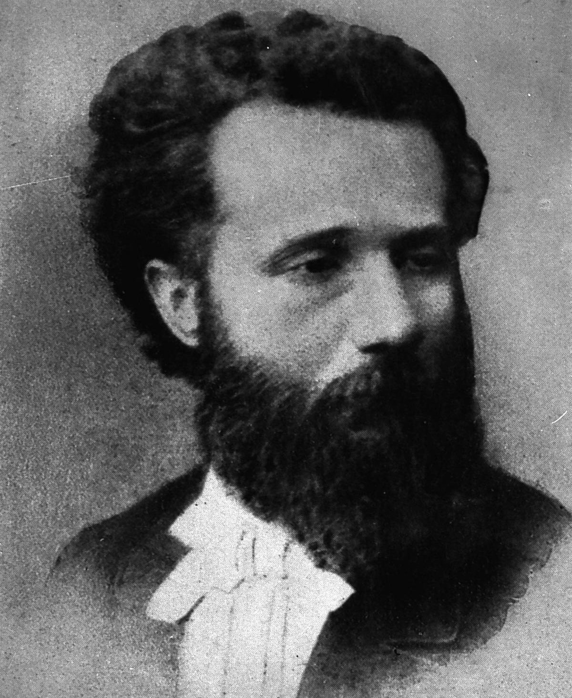
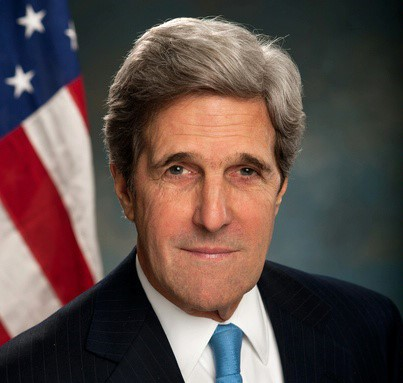
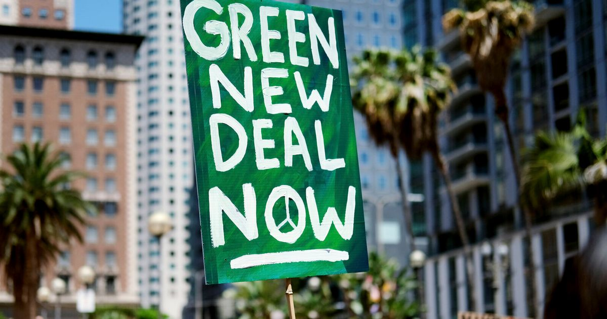
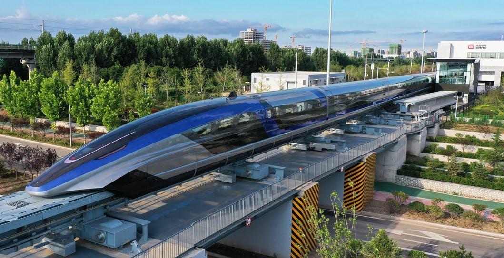

Il riscaldamento globale sta "bruciando" il nostro futuro eppure una buona parte del mondo continua ad agire come se niente stesse accadendo. Cosa ci frena dall'intraprendere una lotta concreta contro il riscaldamento globale? Kerry, Praga e Parisi possono aiutarci a comprendere e a superare il problema
7 anni, 249 giorni, 7 ore, 32 minuti e 13, 12, 11… secondi alla fine del mondo. Se fino a qualche decina di anni fa queste parole sarebbero potute essere l’inizio di un distopico romanzo fantascientifico, oggi segnano, come profezia, l'inesorabile e tragico futuro della nostra specie. Il tempo sta per scadere e il climate clock ne segna l’incessante scorrere, secondo dopo secondo, verso lo zero.
Abbiamo una sola possibilità per poter salvare l'umanità: transizione ecologica.
“L’arte è lunga e la vita breve” ma il mondo, come un bambino impaurito, cela al suo sguardo l’infausto destino che lo attende. Perché? La risposta è, purtroppo, estremamente semplice: l’uomo ha paura della novità, l’uomo ha paura del progresso.
Questo terrore ancestrale per il nuovo, già ampiamente criticato dalle brillanti penne dell’epoca illuministica, è stata ben descritta dai versi intitolati “La strada ferrata” scritti dal poeta ‘Scapigliato’ Emilio Praga.

Ne “La strada ferrata” il poeta milanese utilizza il treno, che avanza inesorabile anche nella campagna più profonda, come emblema di progresso e civilizzazione.
L’invito ai contadini, terrorizzati da quello che sembra un mostro nero trainato da Satana, è quello di non averne paura ma, al contrario, di coglierne i vantaggi.
Praga riveste, quindi, la figura del “pedagogo” intento a spiegare ai contadini che il progresso non è portatore di pericolo o malessere ma, al contrario, di benessere e minor fatica.
Il poeta, poi, assume quell’atteggiamento ambivalente nei confronti del vero, tipico della scapigliatura, come strumento di critica nei confronti della società che lo circonda.
I versi di Praga risultano, ancora oggi, terribilmente attuali e in grado di indicare la via che l’umanità dovrebbe seguire: quella del progresso.
Noi della redazione, così come fatto dal poeta più di un secolo fa, vorremmo spiegare, con alcuni esempi, che la transizione ecologica è, a differenza dalle prospettive dipinte dagli scettici, un’ottima occasione di crescita e sviluppo.
E’ nostro dovere confutare quei tabù che vogliono l’ecologismo come un’ideologia basata sulla decrescita. E' nostro dovere spiegare che vivere una vita ecologica non necessiti una spesa maggiore o una rinuncia alle comodità. Vogliamo trasmettere l’idea che è necessario l’impegno di tutti al fine di garantire la nostra sopravvivenza.
Vogliamo dire agli scettici di non avere paura.

Una recente indagine sostenuta da SWG afferma che le persone più informate in materia ambientale attribuiscano alle azioni quotidiane, come il risparmio, il riciclo, il consumo moderato dei beni e il boicottaggio di prodotti non green; un peso maggiore rispetto ai non informati.
A ribadire questi concetti è stato il neo nominato inviato speciale per la gestione del clima statunitense, John Kerry, durante il suo intervento al summit “Green&Blue” di Repubblica.
Risulta chiaro, quindi, che l’impegno del singolo gioca un ruolo chiave nella lotta al riscaldamento globale.
Sempre nel contesto del summit “Green&Blue” è stato illuminante, a nostro giudizio, l’intervento di Giorgio Parisi: il fisico, oltre ad aver sostenuto la rilevanza del nostro stile di vita nella lotta al cambiamento climatico, ha particolarmente sottolineato l’importanza del nostro voto politico.
Secondo Parisi, infatti, è necessario che la nostra classe politica prenda concretamente iniziativa e agisca contro il cambiamento climatico per scongiurare un irreversibile e catastrofico disastro ambientale.

A sostenere l’argomentazione di Parisi sono i fatti: l’unione europea, a seguito dei numerosi scioperi per il clima attraverso i quali è stato chiaramente espresso il volere di innumerevoli cittadini, ha siglato il Green New Deal: una serie di misure mirate ad azzerare le emissioni europee di CO2 entro il 2050.
Tra queste misure annoveriamo: lo stanziamento di 1000 miliardi di euro da spendere in interventi di transizione verde nel prossimo decennio, l’introduzione di una plastic tax, l’emissione dei green bond e misure di mobilità sostenibile.
Anche l’Italia, sulla scia dell'Europa, ha stanziato quasi 100 dei 750 miliardi di euro del PNRR (piano nazionale di ripresa e resilienza) per politiche di transizione ecologica e di mobilità verde.
Gli effetti dello stanziamento di questo pacchetto sono molteplici: sviluppo delle imprese e delle start-up che operano nel campo dell’innovazione, crescita economica e creazione di infrastrutture ecosostenibili.

Sempre in tema di sviluppo e di mobilità sostenibile, l'Europa ha designato il 2021 come anno europeo delle ferrovie, incoraggiando, in questo modo, i cittadini europei allo spostamento su rotaia.
A rendere il treno il mezzo di trasporto “prediletto” dell’unione è una lunga serie di motivi: le possibilità di sviluppo tecnologico (treni a levitazione magnetica, linee alta velocità), la maggior efficienza energetica, la possibilità di creare solide tratte commerciali e il miglior adattamento alle energie rinnovabili.
Ancora oggi, quindi, il treno risulta il naturale emblema di sviluppo e progresso.
Per concludere, noi della redazione, vogliamo ancora una volta ribadire come sia assolutamente necessario che questo emblematico treno ci conduca, dopo aver sbaragliato le incertezze e le paure, ad un mondo nuovo, un mondo sostenibile.
E’ più che mai importante che tutti comprendano l’importanza di abbracciare uno stile di vita sostenibile: solo così potremo cambiare, solo così potremo salvarci.
Il tempo è poco: è arrivato il momento di cambiare, è arrivato il momento di non avere paura.